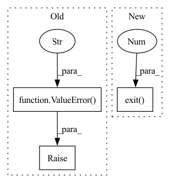

Pattern ID :32278
Before Change
// Sanity check command line arguments
if args.batch_size <= 0:
raise ValueError(f"Batch size must be at least one. "
f"Got batch size = {args.batch_size} instead." )
// Better safe than sorry -- don"t overwrite existing files
if args.out is not None and Path(args.out).is_file():
raise FileExistsError(f"Output file {args.out} already exists.")After Change
if args.out is not None:
if Path(args.out).is_file():
logger.error(f"Output file {args.out} already exists.")
sys.exit(1 )
elif args.phase == "infer" and (Path(args.out).is_dir() or args.out.endswith("/")):
logger.error(f"Output path must be a file during inference, "
f"but got a directory instead: {args.out}")
sys.exit(1)In pattern: SUPERPATTERN
Frequency: 3
Non-data size: 3
Instances Fragment ID: 94405579
Project Name: univiecube/deepnog
Commit Name: 3b3ebee683d8346666ebee255ed721e33fde038f
Time: 2020-07-07
Author: sci@feldbauer.org
File Name: deepnog/client/client.py
M Class Name: AnonimousClass
N Class Name: AnonimousClass
M Method Name: _start_prediction_or_training(1)
N Method Name: _start_prediction_or_training(1)
M Parent Class:
N Parent Class:
M File Name: deepnog/client/client.py
N File Name: deepnog/client/client.py
M Start Line: 253
M End Line: 263
N Start Line: 255
N End Line: 282
Before Change
logger = get_logger(__name__, verbose=args.verbose)
if args.n_epochs <= 0:
raise ValueError(f"Number of epochs must be greater than or equal "
f"one. Got n_epochs = {args.n_epochs} instead." )
out_dir = Path(args.out)
logger.info(f"Output directory: {out_dir} (creating, if necessary)")
out_dir.mkdir(parents=True, exist_ok=True)
// Add random letters to files to avoid name collisionsAfter Change
if args.n_epochs <= 0:
logger.error(f"Number of epochs must be greater than or equal "
f"one. Got n_epochs = {args.n_epochs} instead.")
sys.exit(1 )
out_dir = Path(args.out)
logger.info(f"Output directory: {out_dir} (creating, if necessary)")
out_dir.mkdir(parents=True, exist_ok=True)
// Add random letters to files to avoid name collisions Fragment ID: 94405581
Project Name: univiecube/deepnog
Commit Name: 3b3ebee683d8346666ebee255ed721e33fde038f
Time: 2020-07-07
Author: sci@feldbauer.org
File Name: deepnog/client/client.py
M Class Name: AnonimousClass
N Class Name: AnonimousClass
M Method Name: _start_training(3)
N Method Name: _start_training(1)
M Parent Class:
N Parent Class:
M File Name: deepnog/client/client.py
N File Name: deepnog/client/client.py
M Start Line: 368
M End Line: 381
N Start Line: 384
N End Line: 398
Before Change
if 0.0 < args.confidence_threshold <= 1.0:
threshold = float(args.confidence_threshold)
else:
raise ValueError(f"Invalid confidence threshold specified: "
f"{args.confidence_threshold} not in range "
f"(0, 1]." )
elif hasattr(model, "threshold"):
threshold = float(model.threshold)
logger.info(f"Applying confidence threshold from model: {threshold}")
else:After Change
else:
logger.error(f"Invalid confidence threshold specified: "
f"{args.confidence_threshold} not in range (0, 1].")
sys.exit(1 )
elif hasattr(model, "threshold"):
threshold = float(model.threshold)
logger.info(f"Applying confidence threshold from model: {threshold}")
else: Fragment ID: 94405583
Project Name: univiecube/deepnog
Commit Name: 3b3ebee683d8346666ebee255ed721e33fde038f
Time: 2020-07-07
Author: sci@feldbauer.org
File Name: deepnog/client/client.py
M Class Name: AnonimousClass
N Class Name: AnonimousClass
M Method Name: _start_inference(3)
N Method Name: _start_inference(1)
M Parent Class:
N Parent Class:
M File Name: deepnog/client/client.py
N File Name: deepnog/client/client.py
M Start Line: 269
M End Line: 365
N Start Line: 288
N End Line: 381